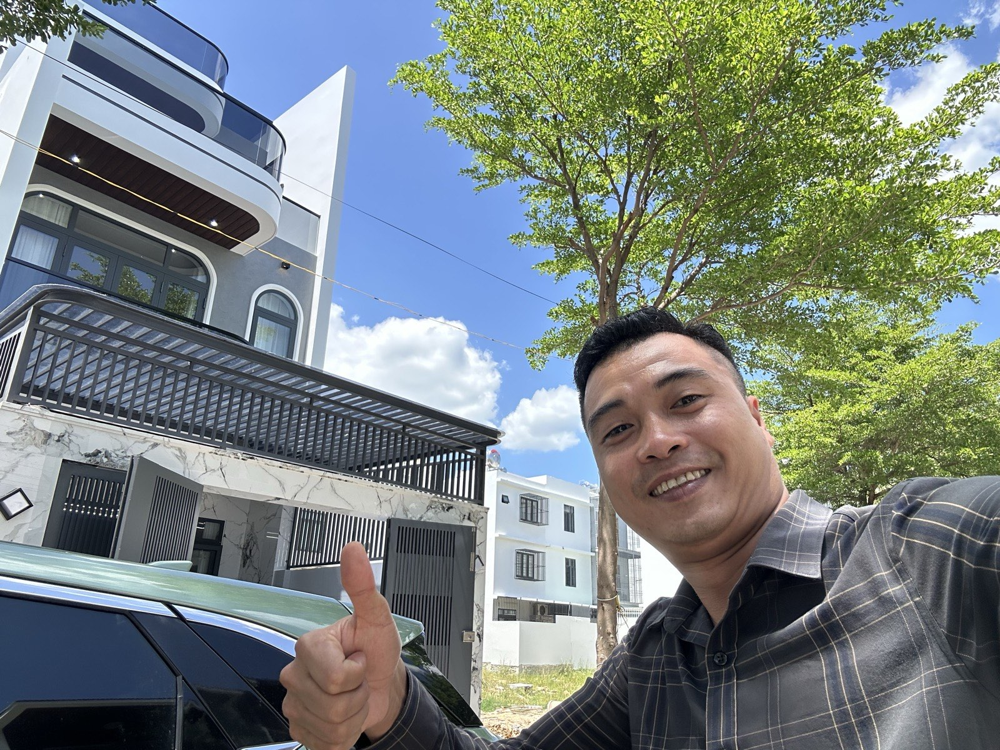
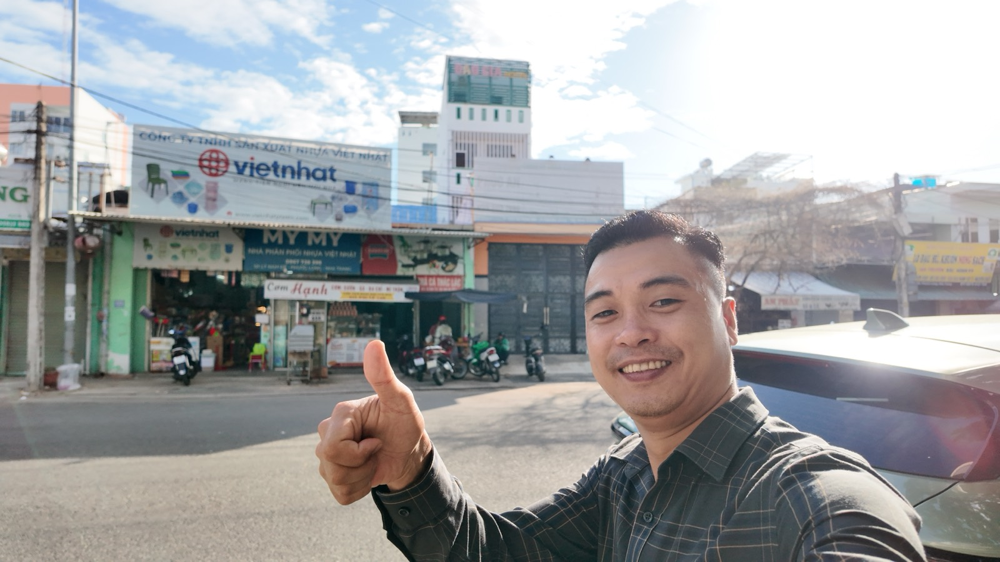

Mua đất thừa kế: 4 câu hỏi trước khi đặt cọc với người đại diện
Một lô đất đứng tên ông bà, ông bà đã mất, các con chưa chia. Một người trong nhà đứng ra "đại diện gia đình" để bán. Đây là kiểu giao dịch mua đất thừa kế tôi gặp không ít ở Nha Trang — và cũng là kiểu dễ đổ nhất ở phút cuối. Bài này là bốn câu hỏi tôi muốn người mua tự hỏi trước khi đưa tiền cọc.

Căn nhà mới hay lô đất cũ, câu hỏi đầu tiên vẫn là: ai đang có quyền ký bán.
Cái vướng làm chậm một dự án cũng làm đổ một giao dịch
Tuần trước, đọc tin về dự án CCSEP đoạn qua Nha Trang, tôi dừng lại ở một chi tiết. Dự án thu hồi 20,53 ha liên quan 474 hộ, còn 205 hộ chưa đồng thuận; trong các nguyên nhân được nêu có chuyện thừa kế vướng — người thừa kế ở nước ngoài, gia đình không thống nhất (theo Báo Khánh Hoà, 20/11/2026).
Một dự án có cả bộ máy nhà nước đứng sau còn bị chậm vì chuyện chia thừa kế. Một giao dịch mua bán giữa hai gia đình thì càng dễ đổ vì đúng cái vướng ấy — chỉ khác là người chịu thiệt thường là người mua đã đặt cọc.
Tôi không phải luật sư, và bài này không thay cho tư vấn pháp lý. Đây là những câu hỏi tôi rút ra từ nghề môi giới, kèm vài điều luật công khai để anh/chị tự đọc thêm.
Câu 1: Sổ đứng tên ai — người đó còn sống không?
Nghe thì đơn giản, nhưng nhiều người bỏ qua. Người ngồi trước mặt mình nói "đất của nhà tôi" chưa có nghĩa là đất của người đó. Hãy đọc tên trên giấy chứng nhận, rồi hỏi thẳng: người đứng tên còn sống không, còn minh mẫn không, có mặt để ký được không?
Nếu người đứng tên đã mất, theo Bộ luật Dân sự 2015 (Luật số 91/2015/QH13 của Quốc hội), thời điểm người có tài sản chết là thời điểm mở thừa kế (Điều 611). Từ lúc đó, lô đất là di sản — chưa thuộc riêng về người nào trong nhà cho tới khi được phân chia theo đúng thủ tục. Người "đại diện gia đình" nói gì đi nữa, một mình họ chưa thể bán thay cho cả nhà.
Tôi đã viết riêng về chuyện kiểm người ký ở bài 23/10: hợp đồng có chữ ký vẫn có thể vô hiệu. Đất thừa kế là trường hợp mà câu hỏi "ai được ký" khó nhất.

Câu 2: Khai nhận di sản thừa kế đã làm chưa — có văn bản công chứng không?
Đây là câu hỏi quan trọng nhất trong thủ tục mua bán đất thừa kế. Theo Luật Công chứng 2024 (Luật số 46/2024/QH15, hiệu lực từ 1/7/2025), người thừa kế có quyền yêu cầu công chứng văn bản phân chia di sản, và văn bản đã công chứng là căn cứ để cơ quan nhà nước đăng ký chuyển quyền sử dụng đất cho người được hưởng (Điều 59, theo văn bản hợp nhất Luật Công chứng đăng trên Cổng Thông tin điện tử Chính phủ).
Hai chi tiết trong điều luật này người mua nên biết:
- Có bước niêm yết. Tổ chức công chứng phải niêm yết việc tiếp nhận hồ sơ, và công chứng viên chỉ công chứng sau khi việc niêm yết hoàn thành mà không có khiếu nại, tố cáo nào về việc phân chia đó. Nghĩa là nếu trong nhà còn người chưa đồng ý, chuyện có thể "lộ" ra ngay ở bước này — tốt cho người mua nếu mình chưa đưa tiền.
- Hồ sơ cần giấy tờ chứng minh quan hệ. Khai nhận di sản thừa kế cần những giấy tờ gì? Theo khoản 2 Điều 59, ngoài giấy tờ thông thường còn có giấy chứng tử, di chúc (nếu có) hoặc giấy tờ chứng minh quan hệ với người để lại di sản, và giấy tờ về quyền sử dụng đất. Gia đình thiếu một mảnh giấy là hồ sơ có thể đứng lại rất lâu.
Vì vậy, câu tôi muốn người mua hỏi không phải "gia đình đã thống nhất chưa", mà là: "Văn bản phân chia di sản đã công chứng chưa, và sổ đã sang tên người bán chưa?" Hai câu nghe giống nhau, nhưng câu thứ hai mới có giấy tờ để kiểm.
Câu 3: Đủ chữ ký của mọi người thừa kế chưa — kể cả người ở xa?
Ca CCSEP nhắc tới người thừa kế ở nước ngoài. Đây đúng là chỗ hay vướng nhất. Một gia đình bốn anh chị em, ba người ở Nha Trang đồng ý bán, một người ở nước ngoài chưa ký — lô đất đó chưa bán được, dù ba người còn lại hứa chắc đến đâu.
Người ở xa có thể uỷ quyền cho người khác ký thay, nhưng uỷ quyền phải làm đúng hình thức pháp luật yêu cầu, và người nhận uỷ quyền chỉ được làm trong phạm vi được uỷ quyền. Ký ở nước ngoài thì làm ở đâu, giấy tờ có cần hợp pháp hoá lãnh sự không — đó là câu hỏi cho công chứng viên, không phải cho môi giới hay cho người bán. Tôi chỉ khuyên một điều: xem tận mắt giấy uỷ quyền, đọc kỹ phạm vi, đừng chỉ nghe "có uỷ quyền rồi".
Còn một điểm ít người để ý: theo Điều 623 Bộ luật Dân sự 2015, thời hiệu để người thừa kế yêu cầu chia di sản là 30 năm đối với bất động sản, tính từ thời điểm mở thừa kế (trích theo Tạp chí Toà án nhân dân). Ba mươi năm là quãng thời gian rất dài để một người thừa kế "bị quên" quay lại đòi quyền của mình.
Câu 4: Tiền cọc nằm ở đâu cho tới khi giấy tờ đủ?
Ba câu trên là về giấy tờ. Câu cuối là về tiền của chính người mua. Khi lô đất còn đang trong quá trình khai nhận, phân chia, sang tên, mọi thứ đều có thể dừng lại ở bất kỳ bước nào — không phải do ai gian dối, mà chỉ vì một người trong nhà đổi ý.
Vài điều tôi hay nhắc người mua ghi rõ vào giấy đặt cọc, có công chứng viên hoặc luật sư xem trước:
- Bên nhận cọc là ai — tốt nhất là tất cả những người có quyền, hoặc người có giấy uỷ quyền hợp lệ của họ, chứ không chỉ "người đại diện".
- Mốc thời gian cho từng bước: công chứng văn bản phân chia di sản, sang tên, rồi mới đến công chứng chuyển nhượng.
- Điều kiện hoàn cọc nếu thủ tục thừa kế không hoàn tất đúng hạn, hoặc có người khiếu nại trong thời gian niêm yết.
- Số tiền cọc vừa phải so với mức rủi ro — và cân nhắc các hình thức giữ tiền mà cả hai bên cùng kiểm soát được, hỏi công chứng viên hoặc ngân hàng về cách làm phù hợp.
Logic này giống bài tôi viết hôm 20/11 về lô đất chưa có sổ: người mua cần ghi gì vào giấy đặt cọc. Giấy tờ chưa xong thì tiền đi chậm lại một nhịp.
Điều tôi rút ra sau nhiều năm làm nghề
Đất thừa kế không phải đất xấu. Nhiều lô ở khu phố cũ Nha Trang có vị trí rất đẹp chính vì đã ở trong một gia đình hai, ba đời. Nhưng giá trị của lô đất và khả năng mua được lô đất đó là hai chuyện khác nhau. Người mua giỏi không phải người trả giá giỏi, mà là người biết hỏi đúng câu trước khi đưa tiền.
Bốn câu hỏi trên không giúp anh/chị thay luật sư. Nó chỉ giúp anh/chị biết lúc nào nên dừng lại để hỏi luật sư. Song song với giấy tờ thừa kế, nhớ kiểm cả quy hoạch của lô đất — tôi đã viết cách hỏi "quyết định số mấy, ngày nào" ở bài 18/11.
Nguồn tham khảo
- Đẩy nhanh công tác giải phóng mặt bằng dự án CCSEP — Báo Khánh Hoà, 20/11/2026
- Luật Công chứng số 46/2024/QH15 (văn bản hợp nhất 50/VBHN-VPQH) — Quốc hội ban hành 26/11/2024, Văn phòng Quốc hội hợp nhất 2026; Điều 59
- Bộ luật Dân sự số 91/2015/QH13 — Quốc hội ban hành 24/11/2015, hiệu lực 01/01/2017; Điều 611, Điều 623
- Bàn về thời hiệu thừa kế của Bộ luật Dân sự 2015 — Tạp chí Toà án nhân dân
Bài viết chia sẻ kinh nghiệm nghề môi giới và trích một số điều luật công khai để người đọc tự tìm hiểu thêm; không phải tư vấn pháp lý cho trường hợp cụ thể nào. Quy định về thừa kế, công chứng, đất đai có thể được sửa đổi và hướng dẫn chi tiết bằng văn bản khác. Trước khi đặt cọc hoặc ký giấy tờ, anh/chị nên nhờ công chứng viên hoặc luật sư kiểm tra hồ sơ thực tế.
"Rồi, ngày mới tốt lành nhé."
Sống tử tế · Kiếm tiền hạnh phúc · Cho đi giá trị
Đang tính đặt cọc một lô đất của "cả gia đình"?
Gửi tôi những giấy tờ người bán đã đưa. Tôi giúp anh/chị lập danh sách câu hỏi cần làm rõ trước khi đặt cọc, và chỉ chỗ nên nhờ công chứng viên hoặc luật sư kiểm tra. Miễn phí.
Nhắn Zalo — 0869 668 638